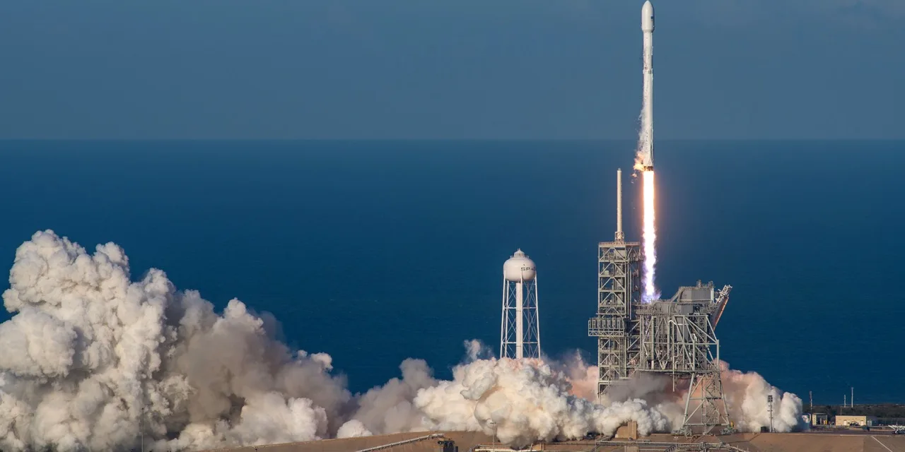

스페이스X는 2026년 6월 12일 나스닥에서 SPCX로 거래를 시작했습니다. 투자자가 가장 먼저 해야 할 일은 회사의 매력을 확인하는 일이 아닙니다. 그 매력은 이미 시장이 알고 있습니다. 더 중요한 질문은 상장 첫날 가격이 그 매력 중 얼마를 먼저 가져갔는지, 그리고 새로 들어가는 투자자가 아직 확인되지 않은 위험을 얼마에 사는지입니다.
Yahoo Finance 차트 기준으로 스페이스X의 기준 가격은 135.00달러였고 첫 정규 거래일 종가는 160.95달러였습니다. 장중 고가는 176.52달러, 저가는 150.00달러였습니다. 단순 계산으로 종가는 기준 가격보다 약 19.2% 높고, 장중 고가는 약 30.8% 높았습니다. 첫날 거래량도 5억 주를 넘었습니다. 이 정도면 “상장했으니 지금 사도 되나”보다 “첫날 수급이 이미 만든 프리미엄을 감당할 수 있나”가 더 정확한 질문입니다.
이 글은 스페이스X의 매수나 매도를 권하는 글이 아닙니다. 오히려 상장 직후 가장 위험한 착각, 즉 좋은 회사와 좋은 진입 가격을 같은 말로 받아들이는 습관을 피하기 위한 점검표입니다. 스페이스X는 분명 우주 기술 산업의 기준을 바꾼 회사입니다. 다만 공개시장 주식이 된 순간부터는 발사 장면보다 손익계산서, 락업 물량, 현금흐름, 첫 분기 실적이 더 냉정한 언어가 됩니다.
첫날 주가는 이미 좋은 뉴스의 일부를 가져갔습니다

상장 첫날 급등은 두 가지 뜻을 동시에 가질 수 있습니다. 하나는 기관과 개인 모두 스페이스X의 성장성을 강하게 원했다는 뜻입니다. 다른 하나는 공모가 근처에서 사지 못한 투자자가 첫날부터 더 높은 가격을 지불했다는 뜻입니다. 주가가 135달러에서 160.95달러로 올라온 뒤에는 같은 회사라도 기대수익률과 손실 여지가 달라집니다.
그래서 지금 가격에서 가장 먼저 볼 것은 “스페이스X가 대단한가”가 아닙니다. 그 질문은 이미 수년 동안 답이 나와 있었습니다. Falcon 9 재사용 발사, Starlink 위성망, Dragon 임무, Starship 개발, 정부·국방 고객까지 모두 강력한 자산입니다. 하지만 좋은 자산을 가진 회사도 상장 직후에는 유통물량과 기대치가 주가를 더 크게 흔듭니다.
특히 상장 직후 첫 며칠은 기업가치보다 수급이 더 앞서 움직이기 쉽습니다. 공모를 받지 못한 투자자의 추격 매수, 단기 차익 실현, 초기 배정 물량의 회전, 옵션 시장 형성 기대가 섞입니다. 이 구간에서 “가격이 오르니 더 안전하다”고 느끼면 안 됩니다. 오히려 가격이 오른 만큼 다음 실적이 증명해야 할 부담도 커졌다고 봐야 합니다.
스타링크가 벌고 스타십이 쓰는 구조를 나눠야 합니다
관련 영상
SpaceX IPO 이후 투자자가 확인해야 할 내용을 설명하는 롱폼 영상
스페이스X를 하나의 우주 기업으로 뭉뚱그리면 판단이 흐려집니다. SEC S-1 기준으로 2026년 3월 말 Starlink 위성은 약 9,600기, 가입자는 약 1,030만 명, 서비스 지역은 164개 국가와 지역입니다. 이 숫자는 스페이스X가 단순 발사 기업을 넘어 반복 매출 기반을 만든 회사라는 점을 보여줍니다.
하지만 반복 매출이 있다고 해서 곧바로 안전한 주식이 되는 것은 아닙니다. Starlink는 위성을 계속 올리고, 단말을 공급하고, 국가별 규제를 통과하고, 고객의 해지율을 낮춰야 합니다. 가입자 수가 늘어도 가입자당 매출이 낮아지거나 단말 보조 부담이 커지면 수익성은 생각보다 천천히 좋아질 수 있습니다.
반대로 Starship은 장기적으로 가장 큰 옵션이지만 단기적으로는 비용의 언어에 가깝습니다. S-1은 Starship이 2026년 하반기부터 궤도 페이로드 운송을 시작할 것으로 예상한다고 설명합니다. 이 일정이 맞으면 발사 단가와 위성 배치 속도가 달라질 수 있습니다. 하지만 일정이 밀리거나 시험 실패가 반복되면 개발비, 보험 비용, 시설 투자, 감가상각이 먼저 주주에게 돌아옵니다.
결국 핵심은 “Starlink가 벌고 Starship이 쓰는 구조”를 분리해서 보는 것입니다. 2025년 스페이스X 매출은 186억7,400만 달러, 조정 EBITDA는 65억8,400만 달러였지만 영업손실은 25억8,900만 달러였습니다. 2026년 1분기도 매출 46억9,400만 달러와 조정 EBITDA 11억2,700만 달러가 있었지만 영업손실은 19억4,300만 달러였습니다. 성장과 손실이 동시에 보이는 회사라는 뜻입니다.
락업과 유통물량은 실적보다 빨리 주가를 흔들 수 있습니다
상장 직후에는 실적표가 나오기 전에도 주가를 움직이는 변수가 있습니다. 바로 락업, 유통가능 주식 수, 내부자 물량, 추가 발행 가능성입니다. 스페이스X처럼 오래 비상장으로 남아 있던 회사는 임직원, 초기 투자자, 사모 투자자, 전략 투자자의 이해관계가 복잡할 수 있습니다. 장기 보유자가 많다는 점은 장점일 수 있지만, 일부 물량이 시장에 풀리는 시점에는 수급 부담이 됩니다.
그래서 지금 들어가려는 투자자는 첫 분기 실적보다 먼저 락업 만료 일정과 유통가능 주식 수를 확인해야 합니다. 상장 첫날 가격이 강하게 형성됐을수록 초기 투자자는 일부 차익 실현을 고민할 가능성이 커집니다. 회사의 장기 전망이 좋아도 단기 수급이 주가를 누를 수 있고, 그때 새 투자자는 “회사가 나빠진 것인지, 물량이 나온 것인지”를 구분해야 합니다.
우주 기술 기업은 보통 장기 계획이 큽니다. 발사장, 위성 생산, 지상국, 주파수, 보험, 연구개발, 인력 비용이 모두 자본을 요구합니다. 스페이스X는 다른 우주 기업보다 훨씬 큰 현금 창출 기반을 갖췄지만, Starship과 차세대 Starlink망이 동시에 커지면 추가 투자 부담은 계속 남습니다. 주가가 높을 때 회사가 자본조달을 선택할 가능성도 완전히 배제할 수 없습니다.
첫 분기 실적에서 확인할 숫자는 정해져 있습니다
상장 후 첫 실적에서 가장 중요한 숫자는 매출 성장률 하나가 아닙니다. Starlink 가입자 증가, 가입자당 매출, 해지율, 단말 원가, 기업·정부 고객 비중, 발사 서비스 마진, 설비투자, 잉여현금흐름을 같은 표에 넣어야 합니다. 매출이 빠르게 늘어도 영업손실이 줄지 않으면 시장은 “성장주”보다 “자본 소모주”로 다시 가격을 매길 수 있습니다.
Falcon 계열 발사 사업도 숫자로 봐야 합니다. S-1은 Falcon 9이 2026년 3월 말까지 약 620회의 궤도 발사를 수행했고 Falcon 계열 임무 성공률이 99% 이상이라고 설명합니다. 이 신뢰도는 강력한 경쟁력입니다. 다만 투자자는 성공률 옆에 발사당 수익성, 정비 주기, 보험 비용, 고객 계약 기간, 정부 계약 마진을 함께 붙여야 합니다.
Starship은 별도의 체크리스트가 필요합니다. 첫 상업 페이로드 운송이 실제로 시작되는지, 어느 고객이 어느 가격으로 쓰는지, Falcon 대비 원가가 얼마나 낮아지는지, Starlink 배치 속도가 얼마나 빨라지는지 확인해야 합니다. Starship이 장기적으로 큰 가치를 만들 수 있다는 점과, 그 가치가 올해 손익계산서에 바로 남는다는 말은 전혀 다릅니다.
그럼 지금은 어떤 방식이 더 현실적인가
공격적인 투자자라면 상장 직후 일부만 접근하고 첫 분기 실적, 락업 일정, Starlink 지표를 보면서 나머지 비중을 나누는 방식이 더 현실적입니다. 첫날 종가 기준으로 이미 공모가 대비 프리미엄이 붙어 있기 때문에 한 번에 큰 비중을 싣는 방식은 가격보다 감정에 가까울 수 있습니다.
보수적인 투자자라면 첫 상장사 실적과 락업 만료 전후 수급을 본 뒤 판단해도 늦지 않습니다. 스페이스X가 정말 공개시장에서 오래 성장할 회사라면 기회는 하루로 끝나지 않습니다. 반대로 상장 첫날의 흥분이 만든 가격이라면 몇 주 또는 몇 달 뒤 더 차분한 진입 기회가 나올 수 있습니다.
제가 보는 핵심 기준은 세 가지입니다. 첫째, Starlink가 가입자 증가와 수익성 개선을 동시에 보여주는지입니다. 둘째, Starship 일정이 비용 청구서가 아니라 원가 절감의 증거로 바뀌는지입니다. 셋째, 락업과 유통물량이 주가를 흔들 때 회사의 숫자가 그 변동성을 버틸 만큼 강한지입니다.
결론적으로 스페이스X는 좋은 회사일 가능성이 높지만, 상장 첫날 급등한 뒤의 SPCX가 곧 좋은 가격이라는 뜻은 아닙니다. 지금 사도 되는지의 답은 “가능하다”나 “안 된다”가 아니라, 얼마나 작은 비중으로 어떤 확인 순서를 감당할 수 있느냐에 가깝습니다. 첫 분기 실적, 락업 일정, Starlink 현금흐름, Starship 상업 운송 전환을 확인하기 전까지는 추격 매수보다 기준을 세우는 시간이 더 값질 수 있습니다.
이 글은 특정 종목의 매수나 매도 추천이 아닙니다. 투자 판단 전에는 스페이스X의 최신 공시, 거래소 공시, 증권사 리포트, 본인의 위험 감수 수준을 함께 확인해 주세요.